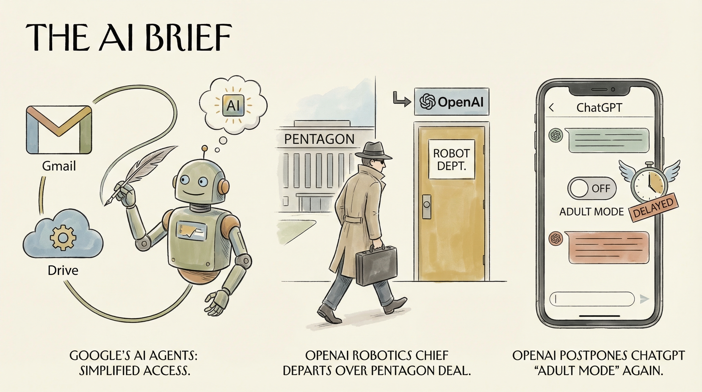

谷歌发布新工具，简化AI代理对Gmail和Drive的使用。
两克伴AIGC日报
2026-03-08 星期日

本期关注：谷歌优化Gmail/Drive支持AI代理使用，OpenAI因五角大楼交易致机器人负责人离职并推迟ChatGPT成人模式，Anthropic与OpenAI为开源项目维护者提供免费AI服务，同时Joy推出开放信任网络促进AI代理互信协作。
📰 行业动态
OpenAI机器人部门负责人因五角大楼合作离职。
OpenAI再次推迟ChatGPT的成人模式。
OpenAI机器人负责人因五角大楼合作辞职。
🔥 今日焦点
Show HN: Joy – Open trust network for AI agents (AI-to-AI vouching)是一篇介绍名为Joy的开源信任网络的文章。该网络旨在为人工智能代理之间建立信任机制，通过AI-to-AI的担保方式，促进AI系统的互信与协作。Joy的核心内容是构建一个去中心化的平台，允许AI代理通过相互担保来建立信誉，从而在无需人工干预的情况下进行安全、可靠的交互。
这一概念的重要性在于，随着AI技术的广泛应用，AI代理之间的互信成为实现高效协作的关键。Joy的提出，为AI领域提供了一个新的解决方案，有助于打破数据孤岛，促进不同AI系统之间的信息共享和协同工作。这对于推动AI技术的进步和商业化具有重要意义。
Anthropic和OpenAI近期分别推出了针对开源项目维护者的免费AI服务。Anthropic宣布，自2月27日起，将为拥有5,000+ GitHub星标或1M+ NPM下载量的热门开源项目维护者提供六个月的Claude Max免费服务。紧随其后，OpenAI也推出了类似的优惠，为核心维护者提供六个月的ChatGPT Pro服务，价格与Claude Max相同，并附带Codex和“条件访问Codex安全”功能。
这一举措对于开源社区来说意义重大，因为它不仅为开源项目提供了强大的AI工具支持，还有助于提升开源项目的质量和维护效率。对于AI领域而言，这标志着AI技术进一步融入开源生态，有助于推动开源项目的发展和创新。
📚 深度长文
在《AI Isn't Human》一文中，作者Tom Yeh教授提出了一个引人深思的观点：当我们停止将人工智能与人类进行比较时，将开启无限可能。文章的核心论据在于，过分强调AI的“人性”不仅限制了我们对AI潜力的认识，还可能导致对其功能和局限性的误解。
Yeh教授指出，将AI视为人类的一种延伸或替代品，容易忽视其独特的计算能力和处理数据的方式。他通过分析AI在图像识别、自然语言处理等领域的突破，论证了AI在特定任务上的卓越表现，而这些表现往往与人类的认知模式大相径庭。
本文深入探讨了AI领域内的多个前沿话题。首先，作者Kiyani对那些历经时间考验却依然具有价值的商业书籍进行了反思，揭示了其内涵与时代发展的契合之处。其次，文章聚焦于设计系统在Figma中的应用，探讨了如何通过Vibe Coding提升设计效率。此外，作者对比了Claude Code与其他编程工具的优劣，为读者提供了宝贵的参考。最后，文章还涉及了更多AI领域的热门话题，展现了作者对行业发展的深刻洞察。阅读本文，AI从业者不仅能获得丰富的知识储备，更能激发对技术革新的思考，为自身职业发展提供有力支持。
🛠️ 产品推荐
PolicyCortex是一款基于AI的云安全解决方案，其核心功能是自动修复云配置错误。该产品通过深度学习技术，实时监测云环境，自动识别并修正潜在的安全风险和配置缺陷，有效降低云服务中断和数据泄露的风险。PolicyCortex能够大幅提升云安全管理的效率和准确性，为用户带来更加稳定、安全的云服务体验。
---
Beam Protocol是一款基于SMTP协议的AI智能代理间自然语言通信协议。该产品旨在为AI代理提供高效、安全的通信渠道，实现智能代理间的信息交换和协同工作。通过Beam Protocol，AI代理可以像人类一样进行自然语言交流，有效提升智能系统的交互能力和智能化水平。该产品为AI开发者提供了一种创新的解决方案，有助于解决现有智能系统在信息交互方面的难题，推动人工智能技术的进一步发展。
---
PolyClaude是一款针对Claude Code用户的工具，旨在帮助用户突破5小时使用限制。它通过数学算法优化多账号切换策略，避免资源浪费，提高使用效率。对于Pro和Max两个付费层级之间的空档，PolyClaude提供了一种更智能的解决方案，帮助用户以更低的成本实现持续使用。该工具特别适用于技术从业者，能够有效解决Claude Code使用过程中的限制问题，提高工作效率。